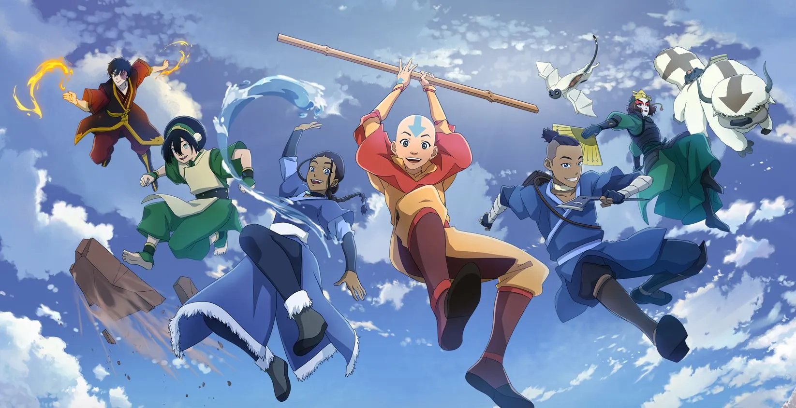

About Ang
Ang the Avatar, is the last of his kind making him the last Airbender. He's got the raddest bending skills – fire, water, earth, and air – and he's on a hilarious and heroic mission to bring harmony to a world in chaos. With his pals, cool moves, and even cooler glider, Aang's adventure is an action-packed, fun-filled ride!
Ang and his friends
Characteristics
- He is a playful spirit
- He is the most powerful Avatar
- He is a compassionate friend
- He is a very determined Air Bender
Ang's Friends
Ang's friends complete the series. With out them it would not be as funny, dramatic or amazing. He has many friends but I would say his closest friends are Katara, Sokka, Toph and Zuko. Click on the links below to read more about them: